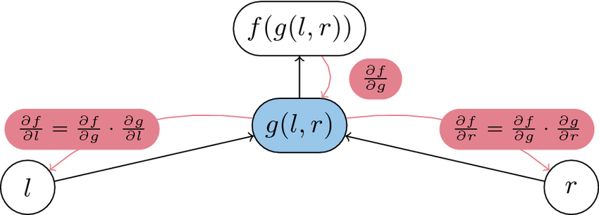

Automatic Differentiation (AD) is a fundamental technique in modern machine learning, particularly crucial for training neural networks and optimizing complex models. In this post, we’ll dive deep into the two main modes of AD: Forward Mode and Reverse-mode, exploring their mechanisms, advantages, and trade-offs.
Forward-mode AD: From Input to Output

Forward Mode AD operates by propagating derivatives from input nodes to output nodes in a computational graph. At each step, it calculates the partial derivative of the current node with respect to the input node. This mode implements a straightforward approach to computing derivatives, making it particularly intuitive to understand.
Key features:
Multiple Passes Required: For a function with n inputs, Forward Mode AD requires n separate forward passes to compute all necessary derivatives. This characteristic makes it less efficient for functions with many input variables, which is often the case in deep learning applications.
Implementation Using Dual Numbers: Forward Mode AD typically uses dual numbers (a + bε) to track both the value and its derivative simultaneously during computation. This elegant mathematical approach allows for efficient derivative computation alongside function evaluation.
Memory Efficiency: One advantage of Forward Mode AD is its relatively lower memory requirements compared to Reverse-mode. Since it doesn’t need to store intermediate results for backpropagation, it can be more memory-efficient for certain types of computations.
Reverse-mode AD: The Power of Reverse Computation

Reverse-mode AD, has become the cornerstone of modern deep learning frameworks. This approach computes derivatives by working backwards from the output to the inputs, making it particularly efficient for functions with many inputs but few outputs.
key features:
Single Pass Efficiency: One of the most significant advantages of Reverse-mode AD is its ability to compute gradients with respect to all input variables in a single backward pass. This makes it highly efficient for typical deep learning scenarios where we have scalar loss functions but numerous parameters.
Gradient Computation: The gradients computed at each node indicate how much that node needs to be adjusted to achieve the steepest ascent/descent direction locally. This information is crucial for optimization algorithms like gradient descent.
Hardware Optimization: Reverse-mode AD allows for various optimizations that can leverage underlying hardware capabilities. Framework implementations can fuse operations and utilize parallel processing to enhance performance.
Pros:
- Highly efficient for functions with many inputs and few outputs (typical in deep learning)
- Enables sophisticated hardware optimizations and operation fusion
Cons:
- Requires storing intermediate results during computation
- Higher memory usage due to maintaining input tensors and operations for gradient computation
- Memory requirements can become significant for large models or batch sizes
Memory Usage and Performance Considerations
The choice between Forward and Reverse-mode AD often comes down to memory-performance trade-offs:
- Memory Patterns:
- Forward Mode AD can achieve up to 1.97 times memory reduction compared to baseline models
- Reverse-mode AD requires more memory but offers better computational efficiency for typical deep learning scenarios
- Performance Impact:
- Forward Mode AD can show up to 20% performance improvement over recomputation methods under similar memory constraints
- Reverse-mode AD’s efficiency makes it the preferred choice for deep learning despite higher memory requirements
Conclusion
Both Forward and Reverse-mode AD have their place in modern machine learning. While Forward Mode AD offers better memory efficiency and is suitable for functions with few inputs, Reverse-mode AD has become the de facto standard in deep learning due to its computational efficiency with scalar loss functions and many parameters. Understanding these trade-offs is crucial for choosing the right approach for specific applications and optimizing model training processes.
The choice between the two modes ultimately depends on your specific use case, considering factors such as:
- The ratio of input to output variables
- Available memory resources
- Computational efficiency requirements
- Hardware optimization capabilities